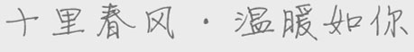

随着科技的发展，高科技的身体疗法也在不断被引进，像通过纳米红光刺激胶原蛋白及透明质酸生成，达到紧致肌肤的效果；
或是利用射频技术或是光纤疗法来消脂，当然治疗的速度快、效果明显。
引|领|科|技|美|白|潮|流
Muskin品牌吸取国际知名抗衰润白项目精髓，两岸三地知名医美学者联袂打造，结合国人体质特征，着力于产品、效果、趋势、数据等方面的升华研究，为消费者的美丽重现，润白肌肤提供360度的保障。
Muskin推崇传统美业与现代科技相结合，开启智能与科技为代表的新医美时代，Muskin秉承科技润白，沐浴肌肤的理念，服务于爱美人群，致力于打造美业快捷连锁机构。
Muskin提出“OAO平台+人工智能(AI)+ 大数据(BD)”的理念。旨在用先进的科技美容技术，给中国广大爱美人士提供更优质的美容服务。通过人肌信息交互理念，运用智能科技，推动美容向智能科技高端化发展。
Muskin服务于追求时尚重视体验、热爱科技的80、90用户。在项目推进的过程中进行了精心调研、科学分析，为这一独特群体带来了轻便、时尚、效果的光电美容服务，这正是Muskin抗衰润白.沐肤站的个性品牌文化的完美体现。
席卷亚太地区，全维度多元化的润白护肤品牌——Muskin
Muskin依托中国千年传统文化理论
渗透医美高科先进技术
这是一次传统技艺的升华，这是一次智能点燃的火花
Muskin因人而异印象诊疗，对每一位顾客的肤质做出详尽的诊疗方案，一对一私人订制。采用用高效的管理与高科技手段降低成本，用亲民价格还美容本质，让每一位有需求的消费者能够轻松实惠的享受美容服务。
未来的美容是基于科技发展与应用的美容，人工智能与大数据将逐渐改善和改变人们的生活方式。Muskin品牌秉承这一理念，不断优化研发更加智能化地美容设备，同时解放美容师的双手，将美容实现高技术化与标准化，从业者将迈向对智能仪器的高级管理与更好的服务上。
Muskin品牌着重肤质润白及全方位立体提升，同时激发肌肤分泌胶原组织。皮肤润白弹性光亮，自然美态，提拉彻底，年轻化效果更佳明显，除皱、提拉、肤质改善一步到位。
一款至臻奢宠的品牌如同一位忠实的伴侣，给予你自信也给予你超乎想象的魅力。 Muskin以奢华矜贵的风格正在中国席卷开来。